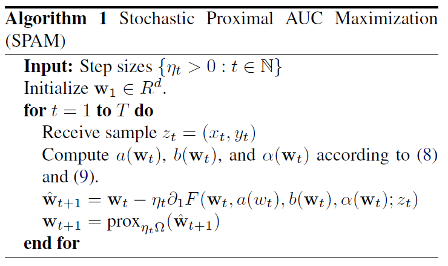
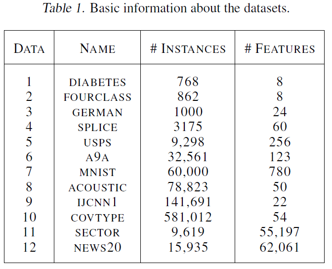
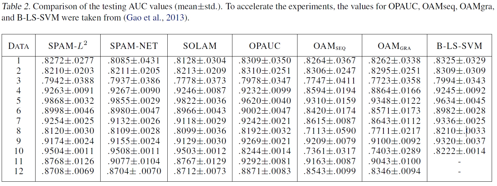
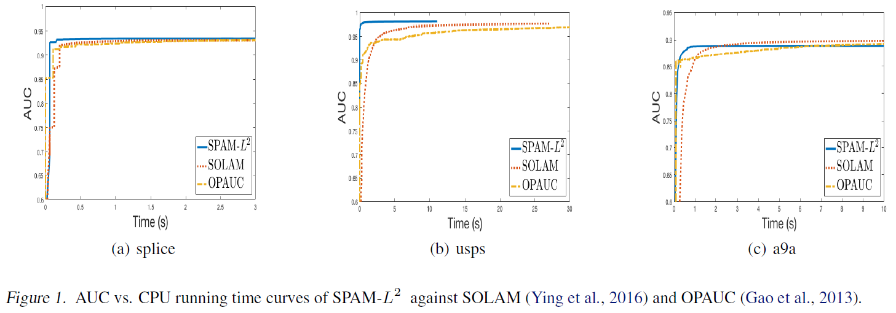

Natole et al., 2018, Stochastic proximal algorithms for AUC maximization, International Conference on Machine Learning. pdf
Introduction
- Stochastic proximal algorithm for AUC maximization (SPAM)
- SPAM applies to general non-smooth regularization terms
- Under the assumption of strong convexity, SPAM can achieve a convergence rate of \(\mathcal{O}(\frac{\log{t}}{t})\)
Background
- Input space \(\mathcal{X} \subseteq \mathbb{R}^d\)
- Output space \(\mathcal{Y} = \{ -1, 1\}\)
- Training data \(\mathbf{z} = \{ (x_i, y_i) \}_{i = 1}^n\): i.i.d. sample from unknown distribution \(\rho\) on \(\mathcal{Z} = \mathcal{X} \times \mathcal{Y}\)
- Scoring function \(f: \mathcal{X} \to \mathbb{R}\)
- AUC: the probability of a positive sample ranks higher than a negative sample
\[\begin{equation}
\begin{split}
\mathop{\mathrm{argmax}}_f \; \text{AUC}(f) & = \mathop{\mathrm{argmax}}_f \; \Pr(f(x) \geq f(x') | y = 1, y' = -1) \\[10pt]
& = \mathop{\mathrm{argmin}}_f \; \mathbb{E} [\mathbb{I} (f(x') - f(x) > 0) | y = 1, y' = -1]
\end{split}
\end{equation}\]
- Using squared loss and linear classifier \(f(x) = \mathbf{w}^{\text{T}} x\),
- Here consider the following regularized formulation for AUC maximization
\[\begin{equation}
\min _{\mathbf{w} \in \mathbb{R}^d} \; \mathbb{E} [(1 - \mathbf{w}^\text{T} (x - x'))^2 | y = 1, y' = -1] + \Omega(\mathbf{w})
\end{equation}\]
- Here assume that \(\Omega\) is strongly convex with parameter \(\beta > 0\)
- For any \(\mathbf{w}, \; \mathbf{w}' \in \mathbb{R}^d\), \(\Omega(\mathbf{w}) \geq \Omega(\mathbf{w}') + \partial \Omega(\mathbf{w}') \cdot (\mathbf{w} - \mathbf{w}') + \frac{\beta}{2} \lVert \mathbf{w} - \mathbf{w}' \rVert ^2\)
- Frobenius norm: \(\beta \lVert \mathbf{w} \rVert ^2\)
- Elastic net: \(\beta \lVert \mathbf{w} \rVert ^2 + \nu \lVert \mathbf{w} \rVert _1\)
Proposed Method
\[\begin{equation}
\begin{split}
& \mathbb{E}[(1 - \mathbf{w}^{\text{T}} (x - x'))^2 | y = 1, y' = -1] \\[11pt]
= & 1 - 2 \mathbb{E}[\mathbf{w}^{\text{T}} x | y = 1] + 2 \mathbb{E}[\mathbf{w}^{\text{T}} x' | y' = -1] \\[11pt]
+ & (\mathbb{E}[\mathbf{w}^{\text{T}} x | y = 1] - \mathbb{E}[\mathbf{w}^{\text{T}} x' | y' = -1])^2 + \mathbb{V}[\mathbf{w}^{\text{T}} x | y = 1] + \mathbb{V}[\mathbf{w}^{\text{T}} x' | y' = 1]
\end{split}
\end{equation}\]
\[\begin{equation}
\begin{split}
& (\mathbb{E}[\mathbf{w}^{\text{T}} x | y = 1] - \mathbb{E}[\mathbf{w}^{\text{T}} x' | y' = -1])^2 = \max _{\alpha} \; - \alpha^2 + 2 \alpha (\mathbb{E}[\mathbf{w}^{\text{T}} x' | y' = -1] - \mathbb{E}[\mathbf{w}^{\text{T}} x | y = 1]) \\[11pt]
& \mathbb{V}[\mathbf{w}^{\text{T}} x | y = 1] = \min _{a} \mathbb{E} [(\mathbf{w}^{\text{T}} x - a)^2 | y = 1] \\[11pt]
& \mathbb{V}[\mathbf{w}^{\text{T}} x' | y' = -1] = \min _{b} \mathbb{E} [(\mathbf{w}^{\text{T}} x' - b)^2 | y' = -1]
\end{split}
\end{equation}\]
- It is easy to see that the optima for \(a\), \(b\), \(\alpha\) are respectively achieved at the following
\[\begin{equation}
\begin{split}
& a = \mathbf{w}^{\text{T}} \mathbb{E}[x | y = 1] \\[11pt]
& b = \mathbf{w}^{\text{T}} \mathbb{E}[x' | y' = -1] \\[11pt]
& \alpha = \mathbf{w}^{\text{T}} (\mathbb{E}[x' | y' = -1] - \mathbb{E}[x | y = 1])
\end{split}
\end{equation}\]
- Using the similar theorem from (Ying et al., 2016), the above AUC optimization is equivalent to
\[\begin{equation}
\begin{split}
\min _{\mathbf{w}, a, b} \; \max_{\alpha \in \mathbb{R}} \; & \mathbb{E}_z [F(\mathbf{w}, a, b, \alpha ; z)] + \Omega(\mathbf{w}) \\[11pt]
F(\mathbf{w}, a, b, \alpha ; z) & = (1 - p)(\mathbf{w}^{\text{T}} x - a)^2 \mathbb{I}(y = 1) + p (\mathbf{w}^{\text{T}} x - b)^2 \mathbb{I}(y = -1) \\[11pt]
& + 2 (1 + \alpha) \mathbf{w}^{\text{T}} x (p \mathbb{I}(y = -1) - (1 - p) \mathbb{I}(y = 1)) - p (1 - p) \alpha^2
\end{split}
\end{equation}\]
- For fixed \(\mathbf{w}\), the optimal for \(a\), \(b\), \(\alpha\) in saddle formulation has the exact formulation as given above
- This leads to conduct stochastic gradient descent only no \(\mathbf{w}\), while \(a\), \(b\), \(\alpha\) are the updated in a deterministic manner
- The proximal mapping associated with a convex function \(\Omega : \mathbb{R}^d \to \mathbb{R}\) is defined as following
\[\begin{equation}
\text{prox} _{\eta_t, \Omega} (\mathbf{w}) = \mathop{\mathrm{argmin}}_{\mathbf{u}} \frac{1}{2} \lVert \mathbf{u} - \mathbf{w} \rVert ^2 + \eta_t \Omega(\mathbf{w})
\end{equation}\]

Convergence Analysis
\[\begin{equation}
\begin{split}
& f(\mathbf{w}) = p(1 - p) \mathbb{E}[(1 - \mathbf{w}^{\text{T}} (x - x'))^2 | y = 1, y' = -1] \\[11pt]
& \mathbf{w}^{\star} = \mathop{\mathrm{argmin}}_{\mathbf{w} \in \mathbb{R}^d} {f(\mathbf{w}) + \Omega(\mathbf{w})} \\[11pt]
& G(\mathbf{w} ; z) = \partial _1 F(\mathbf{w} ; a(\mathbf{w}), b(\mathbf{w}), \alpha(\mathbf{w}), z) \\[11pt]
& \mathbb{E} [\lVert G(\mathbf{w}^{\star} ; z) - \partial f(\mathbf{w}^{\star})\rVert ^2] = \sigma^2_{\star} \\[11pt]
& C_{\beta, M} = \frac{\beta}{128 M^4} \\[11pt]
& \tilde{C}_{\beta, M} = \frac{\beta}{(1 + \frac{\beta^2}{128 M^4})^2} \\[11pt]
& \bar{C}_{\beta, M} = \tilde{C}_{\beta, M} {\beta, M}
\end{split}
\end{equation}\]
- Assumptions
- (A1) \(\Omega(\cdot)\) is \(\beta\)-strongly convex
- (A2) There exists and \(M > 0\) such that \(\lVert x \rVert \leq M\) for any \(x \in \mathcal{X}\)
- Theorem 2. Under the assumptions (A1), (A2), and choosing step sizes with some \(\theta \in (0,1)\) in the form of \(\{ \eta_t = \frac{C_{\beta, M}}{t^{\theta}} : t \in \mathbb{N} \}\), the algorithm SPAM achieves the following
\[\begin{equation}
\begin{split}
\mathbb{E}[\lVert \mathbf{W}_{T+1} - \mathbf{w}^{\star} \rVert ^2] & \leq T^{- \theta} \exp{\left(\frac{\bar{C}_{\beta, M}}{1 - \theta}\right)\left(\frac{\theta}{e \bar{C}_{\beta, M}}\right)^{\frac{\theta}{1 - \theta}}} \mathbb{E}[\lVert \mathbf{w}_1 - \mathbf{w}^{\star} \rVert ^2] \\[11pt]
& + 2 T^{- \theta} \sigma^2_{\star} C^2_{\beta, M} \left( \frac{9}{(1 - \theta)2^{1 - \theta}} \left( \frac{1}{\bar{C}_{\beta, M} (1 - 2^{\theta - 1}) e} \right)^{\frac{1}{1 - \theta}} + \frac{18}{\bar{C}_{\beta, M}} + 1 \right)
\end{split}
\end{equation}\]
- Theorem 3. Under the assumptions (A1), (A2), and choosing step sizes \(\{ \eta_t = (\tilde{C}_{\beta, M}(t + 1))^{-1} : t \in \mathbb{N} \}\), the algorithm SPAM achieves the following where \(t_0 = \max{\left( 2, \left \lceil {1 + \frac{(128 M^4 + \beta^2)^2}{128 M^4 \beta^2}} \right \rceil \right)}\)
\[\begin{equation}
\mathbb{E}[\lVert \mathbf{w}_{T+1} - \mathbf{w}^{\star} \rVert ^2] \leq \frac{1}{T} (t_0 \mathbb{E}[\lVert \mathbf{w}_{t_0} - \mathbf{w}^{\star} \rVert^2]) + \frac{4 \sigma^2_{\star}}{\tilde{C}^2_{\beta, M}} \frac{\log{T}}{T}
\end{equation}\]
Experiments
- Methods
- SPAM-\(L^2\): SPAM with Frobenius norm \(\Omega (\mathbf{w}) = \frac{\beta}{2} \lVert \mathbf{w} \rVert ^2\)
- SPAM-NET: SPAM with elastic net norm \(\Omega (\mathbf{w}) = \frac{\beta}{2} \lVert \mathbf{w} \rVert ^2 + \beta_1 \lVert \mathbf{w} \rVert _1\)
- SOLAM (Ying et al., 2016)
- OPAUC (Gao et al., 2013)
- OAMseq and OAMgra (Zhao et al., 2013)
- B-LS-SVM (Joachims, 2006): a batch learning algorithm for AUC maximization with square loss
- Proximal step for elastic net norm can be written as
\[\begin{equation}
\mathop{\mathrm{argmin}}_{\mathbf{w}} \frac{1}{2} \lVert \mathbf{w} - \frac{\hat{\mathbf{w}}_{t+1}}{\eta_t \beta + 1} \rVert^2 + \frac{\eta_t \beta_1}{\eta_t \beta + 1} \lVert \mathbf{w} \rVert_1
\end{equation}\]
- 80% training, 20% test with 20 runs
- 5-fold cross validation on the trainig dataset to determine \(\beta \in 10^{[-5:5]}\), \(\beta_1 \in 10^{[-5:5]}\)



References
- Gao et al., 2013, One-pass AUC optimization, International Conference on Machine Learning. pdf, summary
- Joachims, 2006, Training linear svms in linear time, International Conference on Knowledge Discovery and Data Mining. pdf
- Ying et al., 2016, Stochastic online AUC maximization, Advances in Neural Information Processing Systems. pdf, summary
- Zhao et al., 2011, Online AUC maximization, International Conference on Machine Learning. pdf, summary
Further Study
- Bottou and LeCun, 2003, Large scale online learning, Advances in Neural Information Processing Systems. pdf
- (AdaGrad) Duchi et al., 2011, Adaptive subgradient methods for online learning and stochastic optimization, Journal of Machine Learning Research. pdf
- Hazan et al., 2012, Projection-free online learning, International Conference on Machine Learning, pdf
- Johnson and Zhang, 2013, Accelerating stochastic gradient descent using predictive variance reduction, Advances in Neural Information Processing Systems. pdf
- Parikh and Boyd, 2014, Proximal algorithms, Foundations and Trends in Optimization. pdf
- Rakhlin et al., 2012, Making gradient descent optimal for strongly convex stochastic optimization, International Conference on Machine Learning. pdf
- Shalev-Shwartz, 2011, Online learning and online convex optimization, Foundations and Trends in Machine Learning. pdf
- Shamir and Zhang, 2013, Stochastic gradient descent for non-smooth optimization: Convergence results and optimal averaging schemes, International Conference on Machine Learning. pdf
- Smale and Yao, 2006, Online learning algorithm, Foundations of Computational Mathematics. pdf
- Yang and Lin, 2018, RSG: Beating subgradient method without smoothness and strong convexity, Journal of Machine Learning Research. pdf
- Zhang and Xiao, 2017, Stochastic primal-dual coordinate method for regularized empirical risk minimization, Journal of Machine Learning Research. pdf
- Zou and Hastie, 2005, Regularization and variable selection via the elastic net, Journal of the Royal Statistical Society: Series B (Statistical Methodology). pdf